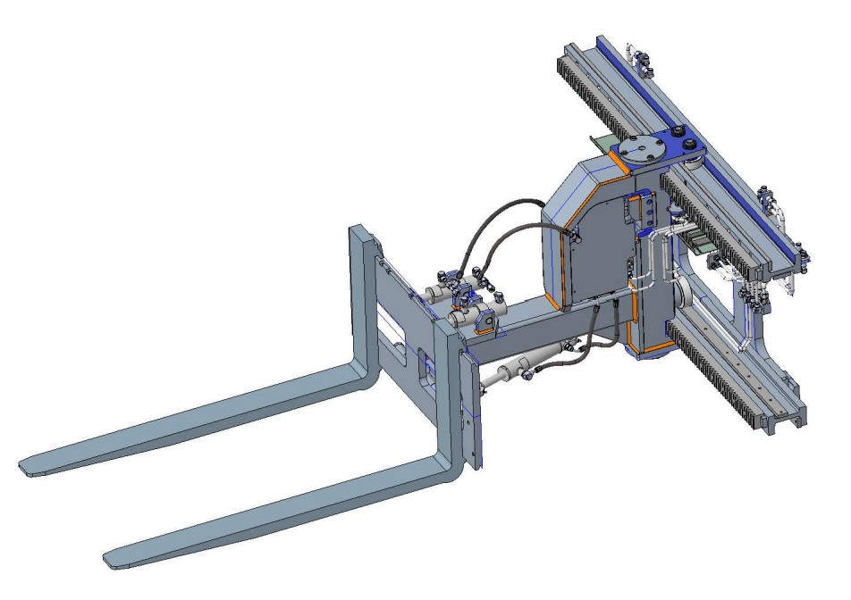
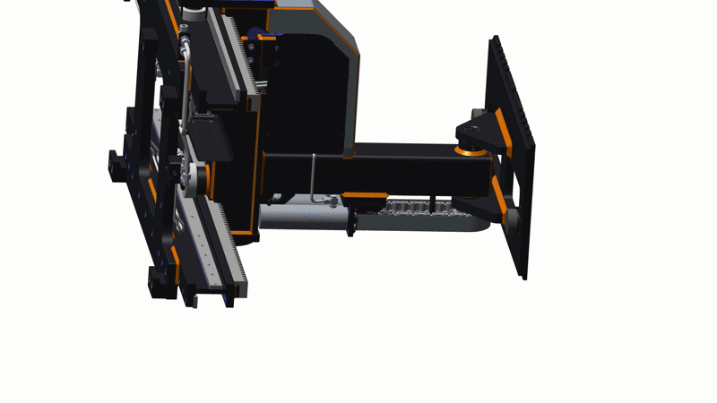
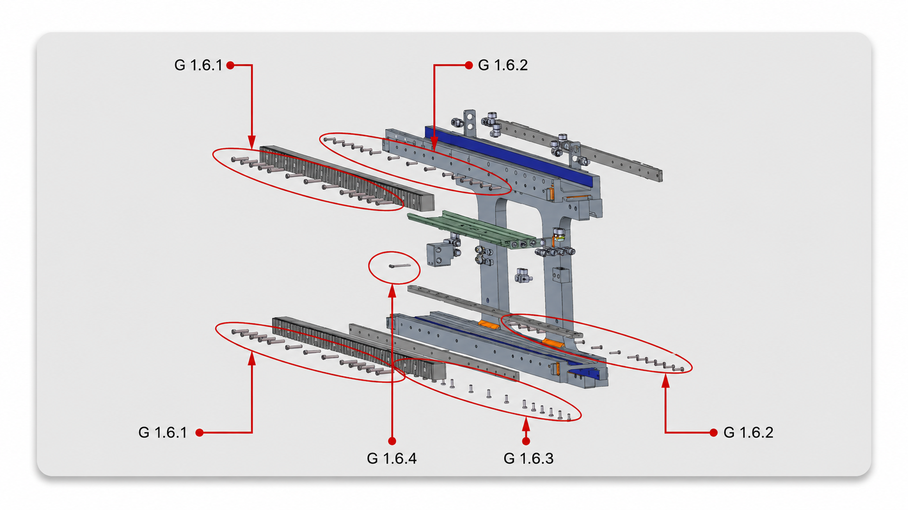
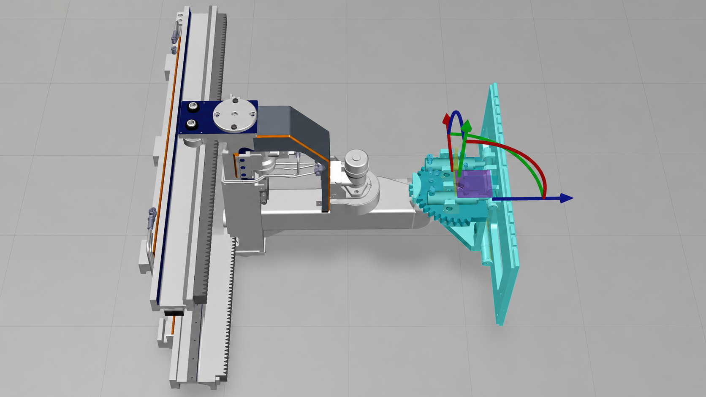
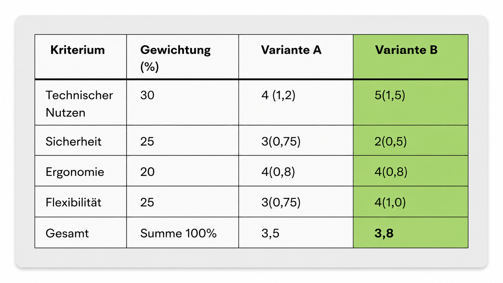
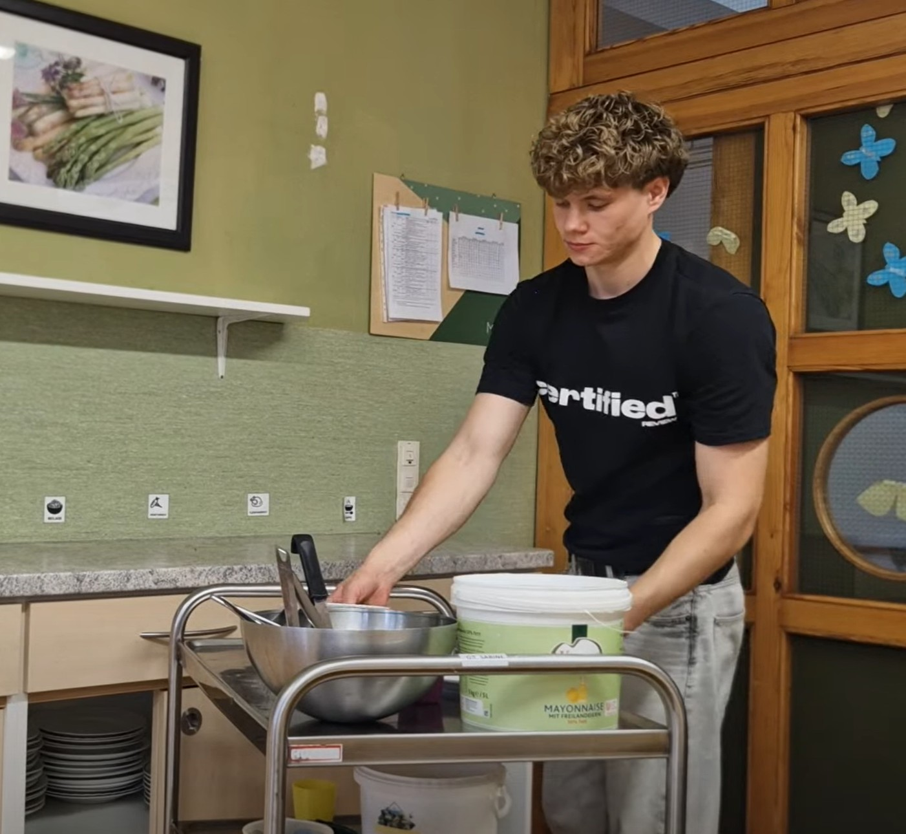
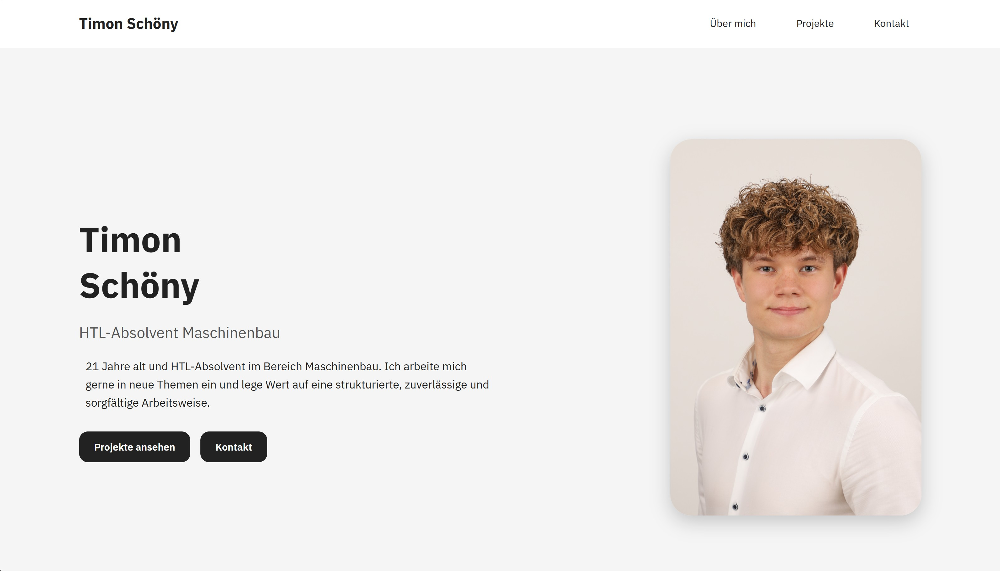
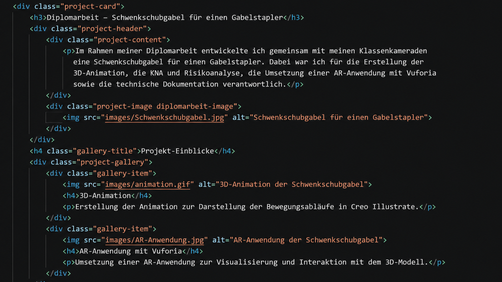
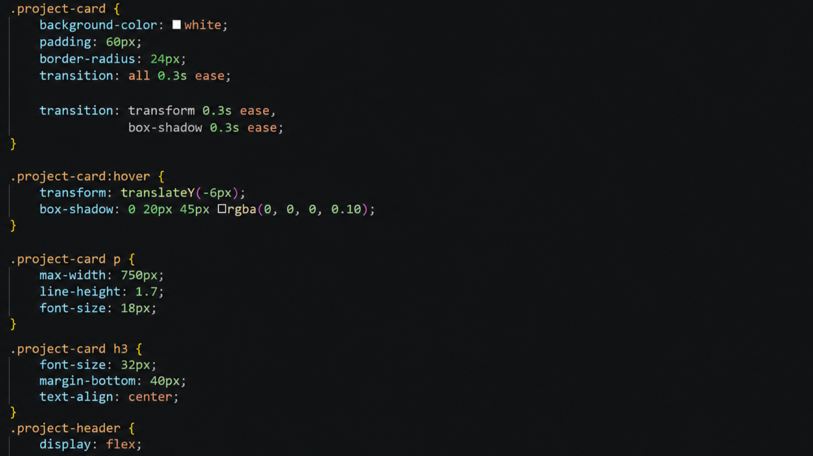

Timon
Schöny
HTL-Absolvent Maschinenbau
21 Jahre alt und HTL-Absolvent im Bereich Maschinenbau. Ich arbeite mich gerne in neue Themen ein und lege Wert auf eine strukturierte, zuverlässige und sorgfältige Arbeitsweise.
Über mich
Was mich begeistert
Mich fasziniert, wie technische Systeme funktionieren und wie aus einer Idee ein fertiges Produkt entsteht. Besonders spannend finde ich es, Zusammenhänge zu verstehen und Lösungen für technische Aufgaben zu entwickeln.
Wie arbeite ich?
Ich arbeite gerne strukturiert und genau. Wenn mich ein Thema interessiert, arbeite ich mich gerne ein und erweitere mein Wissen kontinuierlich. Während meiner Ausbildung und meines Zivildienstes wurde besonders meine sorgfältige Arbeitsweise geschätzt.
Mein Ziel
Ich möchte mein Wissen in einem Unternehmen praktisch anwenden, mich fachlich weiterentwickeln und mit der Zeit Verantwortung übernehmen. Mein Ziel ist es, nach einer guten Einarbeitung einen echten Beitrag zum Unternehmen zu leisten.
Projekte
Diplomarbeit - Schwenkschubgabel
Im Rahmen meiner Diplomarbeit entwickelte ich gemeinsam mit meinem Klassenkameraden eine Schwenkschubgabel für einen Gabelstapler. Dabei war ich für die Erstellung der 3D-Animation, die KNA und Risikoanalyse, die Umsetzung einer AR-Anwendung mit Vuforia sowie die technische Dokumentation verantwortlich.

Projekt-Einblicke

3D-Animation
Erstellung der Animation zur Darstellung der Bewegungsabläufe in Creo Illustrate.

Dokumentation
Dokumentation der Teile und Baugruppen.

AR-Anwendung
Visualisierung des Modells mit Vuforia Studio.

KNA & Risikoanalyse
Analyse möglicher Gefahren und Sicherheitsmaßnahmen.
Zivildienst bei der Mosaik
Während meines Zivildienstes bei Mosaik begleitete und unterstützte ich Menschen mit Behinderung im Alltag. Dabei übernahm ich unterschiedliche Aufgaben und sammelte wertvolle Erfahrungen im Umgang mit Menschen sowie im verantwortungsvollen Arbeiten im Team. Für mein Engagement wurde ich von der Einrichtung für die Auszeichnung „Zivildiener des Jahres 2026“ nominiert.

Im Rahmen der Nominierung entstand ein persönliches Vorstellungsvideo, in dem ich Einblicke in meinen Zivildienstalltag geben durfte.
Portfolio Website
Während der Entwicklung dieser Website eignete ich mir die Grundlagen von HTML und CSS an und setzte sie direkt in einem eigenen Portfolio-Projekt um. Ziel war es, meine Projekte übersichtlich zu präsentieren und gleichzeitig praktische Erfahrungen in der Webentwicklung zu sammeln.

Projekt-Einblicke

HTML
Strukturierung der Website mit HTML.

CSS
Gestaltung des Layouts mit CSS. Einsatz von Flexbox, Grid, Hover-Effekten und Responsive Design für eine moderne Benutzeroberfläche.
Kontakt
Ich freue mich über Ihre Kontaktaufnahme.
Falls Sie mich persönlich kennenlernen möchten, erreichen Sie mich gerne über folgende Kontaktdaten.
Lebenslauf herunterladen /*test*/